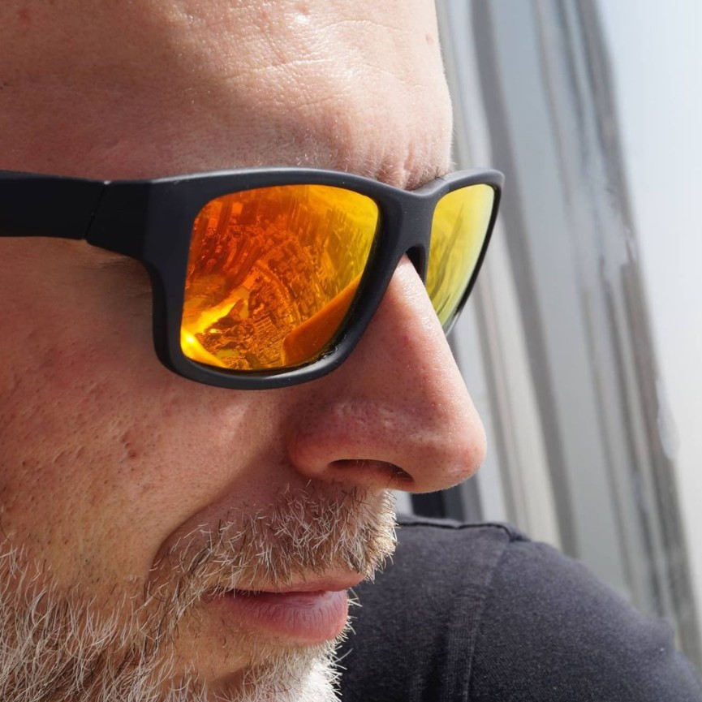

Magamról:
Erősen műszaki beállítotságú embernek tartom magam. Ezen belül mindig is érdekeltek a technika új irányai. Hiszek az élethosszig tartó tanulásban, ezért szeretem magam kipróbálni új területeken is.
- Iskolai tanulmányok:
- 1991-1996 NC, CNC -gépgyártás-technológus
- 1997-1998 programozó, informatikai technikus
Az utóbbi 22 évben mint egyéni vállalkozó dolgozom. A magyar nyelven kívül angol nyelven beszélek B1 szinten.
- Hobbijaim:
- Család:) - mert első a család
- Utazás - szerencsés vagyok, mert volt szerencsém rengeteg országban járni.
- Fényképezés-video - minden ami ide tartozik. A kompozíciótól az utómunkáig.
- Sport - mindegy hogy mi, csak mozogjon az ember :)
- Szerelgetés, barkácsolás - Ha valami elromlik nálunk, inkább megpróbálom magam megjavítani és csak utána hívok szakembert....rég nem járt nálunk szakember.:)